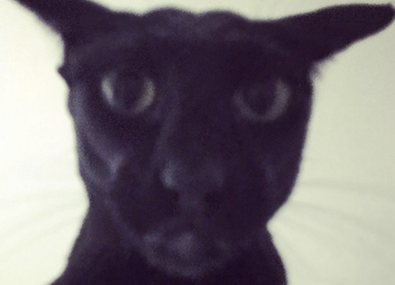

About Me
I am a Master's student in Computer Science at the University of Waterloo, focusing on cybersecurity, machine learning, and privacy-preserving technologies. My current interest lies in Behavioural Biometrics and the power of simple behavioural signals.
Education
Masters of Math in Computer Science
David R. Cheriton School of Computer Science, University of Waterloo
Sept. 2025 - Aug. 2027
Supervisor: Urs Hengartner
Bachelor of Science, Honours Specialization in Computer Science
University of Western Ontario
Graduated June 2025 with Distinction
Thesis: Detection and Classification of Network Attacks using Machine Learning
Supervisor: Zubair Fadlullah
Research Interests
My current research focus is on the power of behavioural based biometrics for authentication and the privacy risks of this information being collected due to its demonstrated ability to reveal significant user information.
My Favorite Animal
My favorite animal is the cat, specifically black ones. They are very cool.
